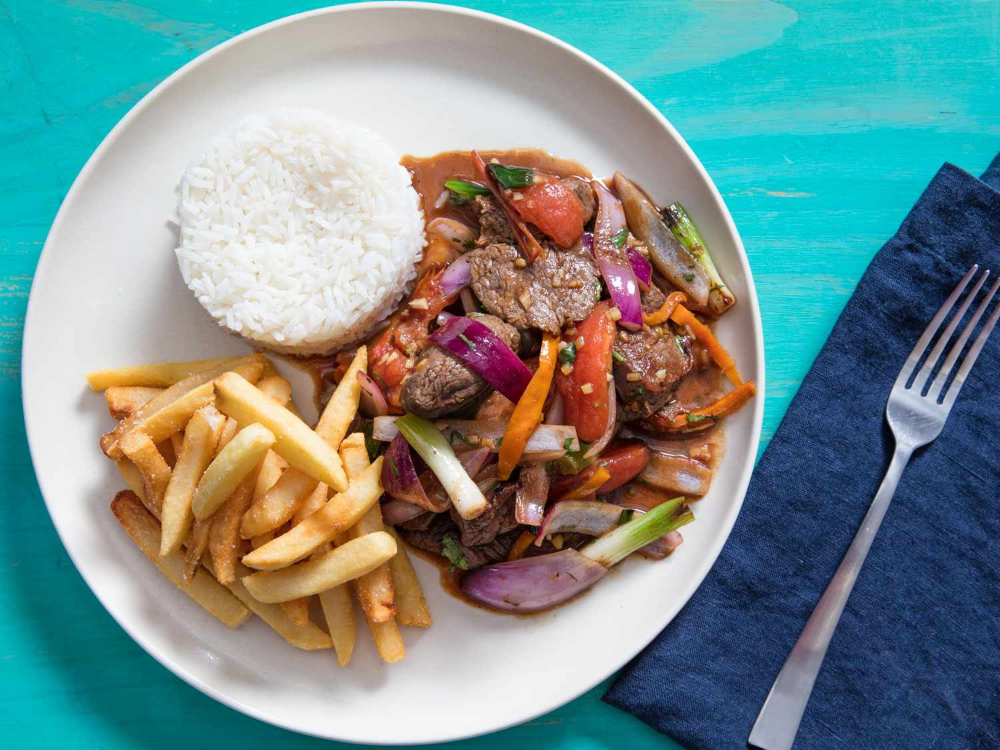

Lomo Saltado

Description
This Peruvian recipe combines the staples of modern cuisine: rice, meat, and of course, french fries.
Ingredients
- 2 Russet potatoes
- 2 cups of desired rice
- 1 tomato
- 1 large white or red onion
- 1 pound of bistec or preferred cut
- a bundle of cilantro for garnish
Steps
- Slice potatoes vertically and slice again flat-side down to desired fry-width
- Slice meat into equal-size strips
- Cut a tomato into quarters and cut an onion into 1 inch slices
- Cook rice to your preferred method; make sure it is more fluffy than soggy, so it can absorb gravy later
- Sautee vegetables and season al gusto, then add your meat
- Fry the french fries then combine meat to the vegetables
- Combine all the ingredients together in saute pan
- Top with cilantro garnish than serve, enjoy!